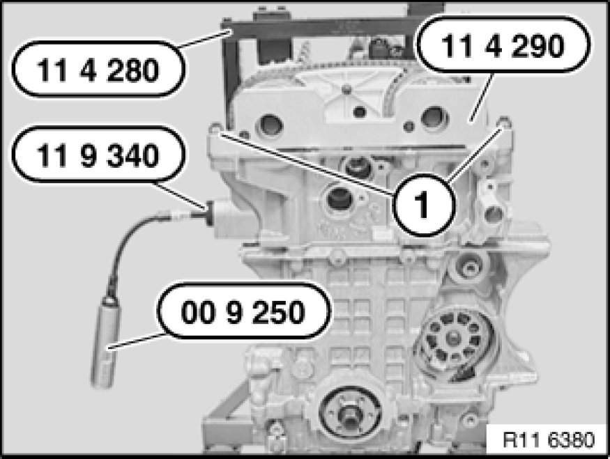
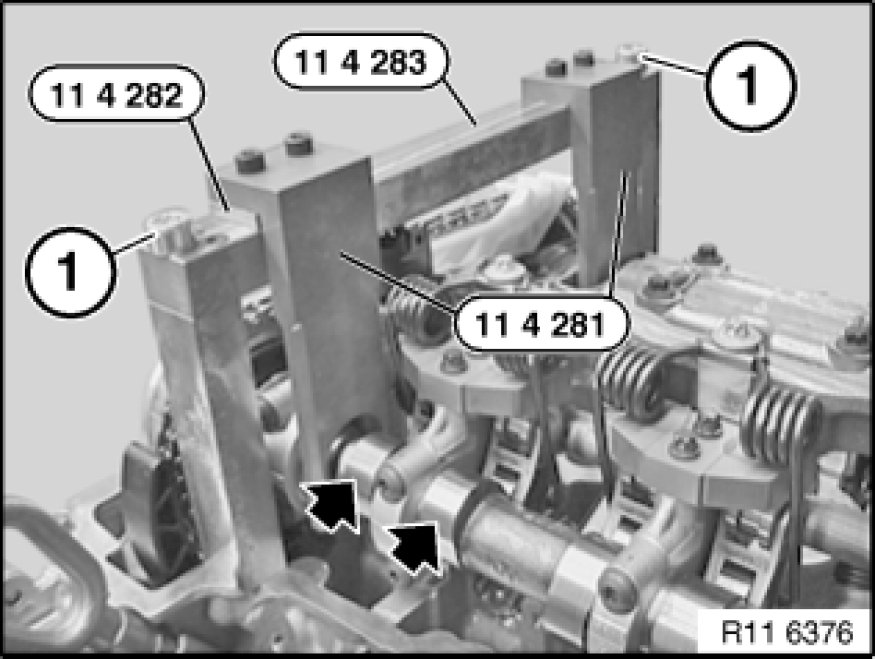

Camkshaft Sprockets Special Tools Required

Secure special tool 11 4 290 with old cylinder head cover bolts (1).
Screw special tool 11 9 340 into cylinder head.
Pretension timing chain with special tool 00 9 250 to 0.6 Nm.
Tighten both central bolts of camshaft adjustment units with special tool 00 9 120.
Adjusting camshaft timing
Adjustments

Secure special tool 11 4 283 on cylinder head with screws (1).
Note:
Fit special tool 11 4 282 underneath on inlet side.
Mount special tool 11 4 281 on inlet and exhaust camshafts.
Checking camshaft timing
Testing and Inspection